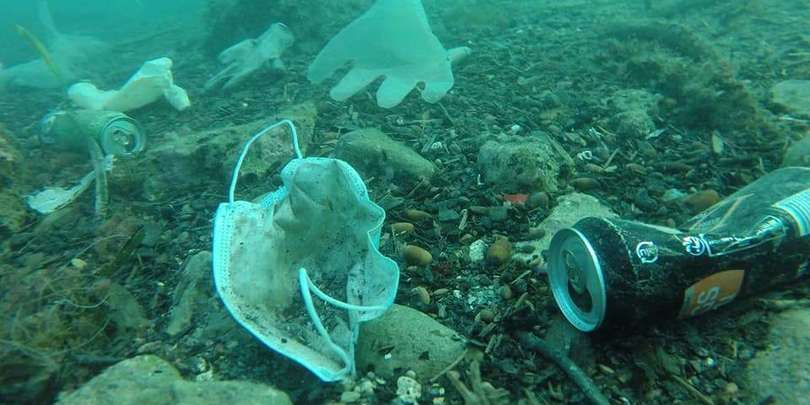

გარემოს დაბინძურების დონემ დამცავი ნიღბებისა და ხელთათმანების ხარჯზე მოიმატა!
COVID-19-ის პანდემიამ მსოფლიოს დიდი ზარალი მოუტანა, მათ შორის ერთ-ერთი კი სანაპიროებზე გადაყრილი ლატექსის ხელთათმანები და დამცავი ნიღბებით სავსე საკანალიზაციო მილებია.

სრულად
A sleepy island paradise's most showstopping sights
Located on the skinniest part of Eleuthera, the Glass Window Bridge stretches across just a 30-foot sliver of land separating the dark, churning waters of the Atlantic Ocean from the smooth turquoise shallows of the Bight of Eleuthera.

See More